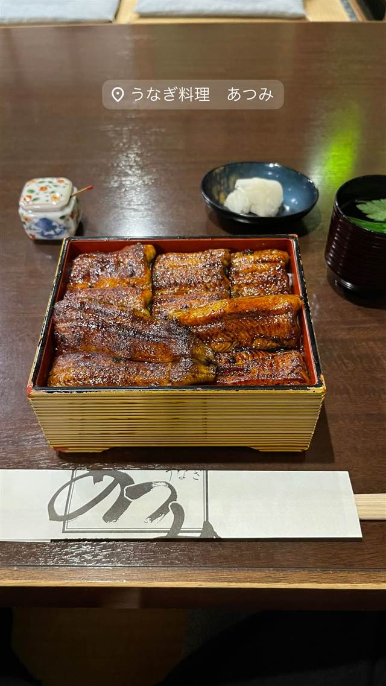
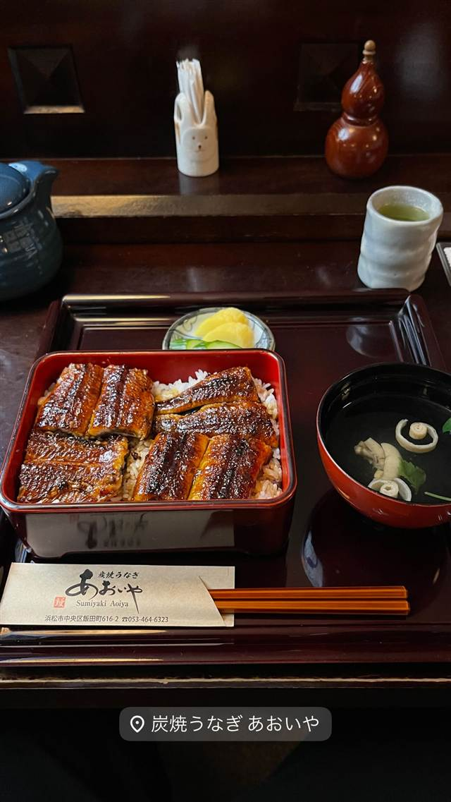
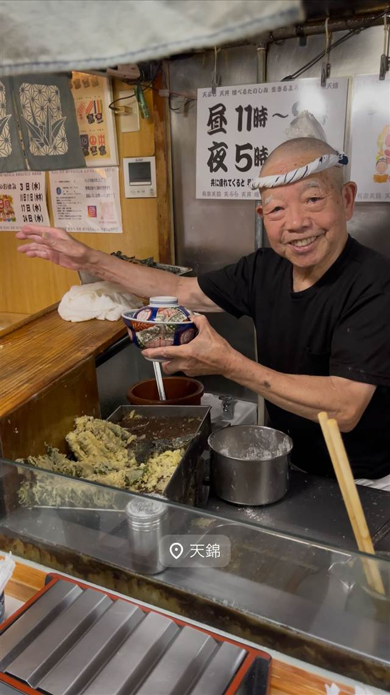
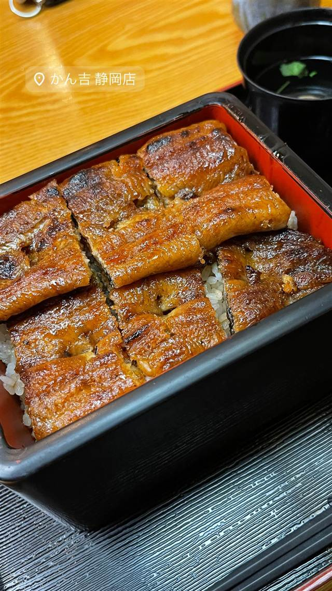

うなぎ料理 あつみ
関東風と関西風を組み合わせた独自の焼き方、5代続くうな重
うなぎ料理 あつみ
WHY GO
関東風と関西風を組み合わせたあつみ独自の焼き方でうなぎを仕上げる
1907年（明治40年）創業、浜松・千歳町で5代続くうなぎの老舗。浜名湖産など厳選した国産うなぎを備長炭で焼き上げ、関東風と関西風を組み合わせた独自の焼き方で仕上げるふっくらとしたうな重が名物。
TRIVIA
豆知識
- 関東風（背開き・一度蒸してから焼く）と関西風（腹開き・直焼き）を組み合わせた、あつみ独自の焼き方がある
- 創業から100年以上、5代にわたり同じ千歳町でうなぎ一筋
REVIEWS
世間の評判
3.73食べログ
ふっくら鰻と待ち時間の長さ
- ふっくらとした白焼きや蒲焼きの焼き加減を評価する声が多く見られる
- スタッフの愛想が良く丁寧な接客だという評価の声が多く見られる
- 電話予約でも待ち時間が長く順番待ちになりやすいという声が多い
食べログ 口コミ1356件
| 創業 | 1907年（明治40年）創業 |
|---|---|
| 系譜 | 現在5代目が続く老舗 |
| 看板 | うな重 |
| こだわり | 浜名湖産など国産の活うなぎを厳選し、国産備長炭で焼き上げる。関東風と関西風を組み合わせた独自の焼き方でふっくら柔らかく仕上げる |
| どこから | 遠方 |
| 予算 | 昼 ¥5,000～¥5,999 夜 ¥5,000～¥5,999 |
| 定休日 | 火曜・水曜 |
| 場所 | 浜松駅（徒歩7分） 静岡県浜松市中区千歳町70 |
| メモ | 浜松駅から徒歩7分 |
食べたもの：うな重
OFFICIAL
店からの知らせ
NEARBY
近い店・同じ系統の店
-
 うなぎ 浅草
初小川（はつおがわ）
注文を受けてから捌く、継ぎ足し辛口だれの江戸前うな重
昼 ¥3,000～¥3,999 夜 ¥3,000～¥3,999
うなぎ 浅草
初小川（はつおがわ）
注文を受けてから捌く、継ぎ足し辛口だれの江戸前うな重
昼 ¥3,000～¥3,999 夜 ¥3,000～¥3,999
-

うなぎ 浜松駅 炭焼うなぎ あおいや 蒸さず備長炭で直火焼き、パリッと皮の関西風うな重 昼 ¥3,000～¥3,999 夜 ¥3,000～¥3,999 -

天ぷら・天丼 第一通り駅・浜松駅 天錦(てんきん) 指先で油温を見極める大将の天丼、半熟卵天ものる 昼 ¥1,000～¥1,999 夜 ¥5,000～¥5,999 -
 うなぎ・天ぷら 浜松駅
酒肴遊善 じねん(浜松料理じねん)
舞阪漁港と浜名湖から毎日直接仕入れる魚介とうなぎで浜松料理を提供する
夜 ¥10,000～¥14,999
うなぎ・天ぷら 浜松駅
酒肴遊善 じねん(浜松料理じねん)
舞阪漁港と浜名湖から毎日直接仕入れる魚介とうなぎで浜松料理を提供する
夜 ¥10,000～¥14,999
-

うなぎ 静岡駅 かん吉 静岡店 活きたうなぎを店内で捌き、関西風の地焼きで仕上げるひつまぶし 昼 ¥4,000～¥4,999 夜 ¥4,000～¥4,999 -
 うなぎ 赤坂
赤坂ふきぬき
東京で唯一とされる本格的な関東風ひつまぶしを100年続くタレで提供する
昼 ¥3,000～¥3,999 夜 ¥8,000～¥9,999
うなぎ 赤坂
赤坂ふきぬき
東京で唯一とされる本格的な関東風ひつまぶしを100年続くタレで提供する
昼 ¥3,000～¥3,999 夜 ¥8,000～¥9,999